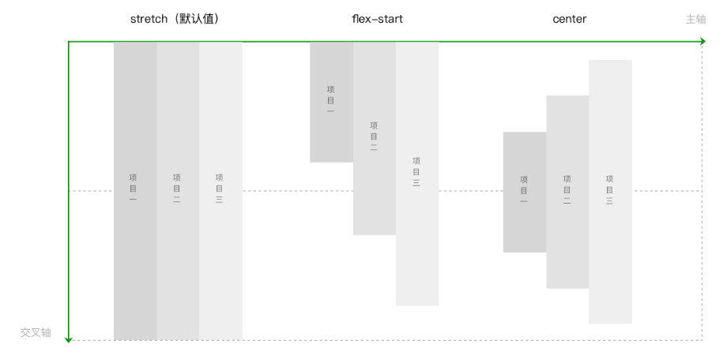

设置容器，用于统一管理容器内项目布局，也就是管理项目的排列方式和对齐方式。
flex-direction 属性
通过设置坐标轴，来设置项目排列方向。
.container{
flex-direction: row（默认值） | row-reverse | column | column-reverse
}
row（默认值）： 主轴横向，方向为从左指向右。项目沿主轴排列，从左到右排列。
row-reverse： row的反方向。主轴横向，方向为从右指向左。项目沿主轴排列，从右到左排列。
column： 主轴纵向，方向从上指向下。项目沿主轴排列，从上到下排列。
column-reverse： column的反方向。主轴纵向，方向从下指向上。项目沿主轴排列，从下到上排列。
flex-wrap 属性
设置是否允许项目多行排列，以及多行排列时换行的方向。
.container{
flex-wrap: nowrap（默认值） | wrap | wrap-reverse
}
nowrap（默认值）： 不换行。如果单行内容过多，则溢出容器。
wrap： 容器单行容不下所有项目时，换行排列。
wrap-reverse： 容器单行容不下所有项目时，换行排列。换行方向为wrap时的反方向。
图4-8 flex-wrap
justify-content 属性
设置项目在主轴方向上对齐方式，以及分配项目之间及其周围多余的空间。
.container{
justify-content: flex-start（默认值） | flex-end | center | space-between | space-around| space-evenly
}
flex-start（默认值）： 项目对齐主轴起点，项目间不留空隙。
center： 项目在主轴上居中排列，项目间不留空隙。主轴上第一个项目离主轴起点距离等于最后一个项目离主轴终点距离
flex-end： 项目对齐主轴终点，项目间不留空隙。
space-between： 项目间间距相等，第一个项目离主轴起点和最后一个项目离主轴终点距离为0。
space-around： 与space-between相似。不同点为，第一个项目离主轴起点和最后一个项目离主轴终点距离为中间项目间间距的一半。
space-evenly： 项目间间距、第一个项目离主轴起点和最后一个项目离主轴终点距离等于项目间间距。
图4-9 justify-content
align-items 属性
设置项目在行中的对齐方式。
.container{
align-items:stretch（默认值） | flex-start | center | flex-end | baseline
}
stretch（默认值）： 项目拉伸至填满行高。
flex-start： 项目顶部与行起点对齐。
center： 项目在行中居中对齐。
flex-end： 项目底部与行终点对齐。
baseline： 项目的第一行文字的基线对齐。。


图4-10 align-items
align-content 属性
多行排列时，设置行在交叉轴方向上的对齐方式，以及分配行之间及其周围多余的空间。
.container{
align-content: stretch（默认值） | flex-start | center | flex-end | space-between |space-around | space-evenly
}
stretch（默认值）： 当未设置项目尺寸，将各行中的项目拉伸至填满交叉轴。当设置了项目尺寸，项目尺寸不变，项目行拉伸至填满交叉轴。
flex-start： 首行在交叉轴起点开始排列，行间不留间距。
center： 行在交叉轴中点排列，行间不留间距，首行离交叉轴起点和尾行离交叉轴终点距离相等。
flex-end： 尾行在交叉轴终点开始排列，行间不留间距。
space-between： 行与行间距相等，首行离交叉轴起点和尾行离交叉轴终点距离为0。
space-around： 行与行间距相等，首行离交叉轴起点和尾行离交叉轴终点距离为行与行间间距的一半。
space-evenly： 行间间距、以及首行离交叉轴起点和尾行离交叉轴终点距离相等。


图4-11 align-content